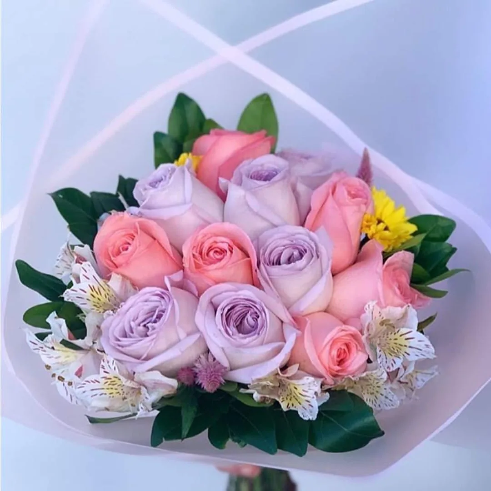
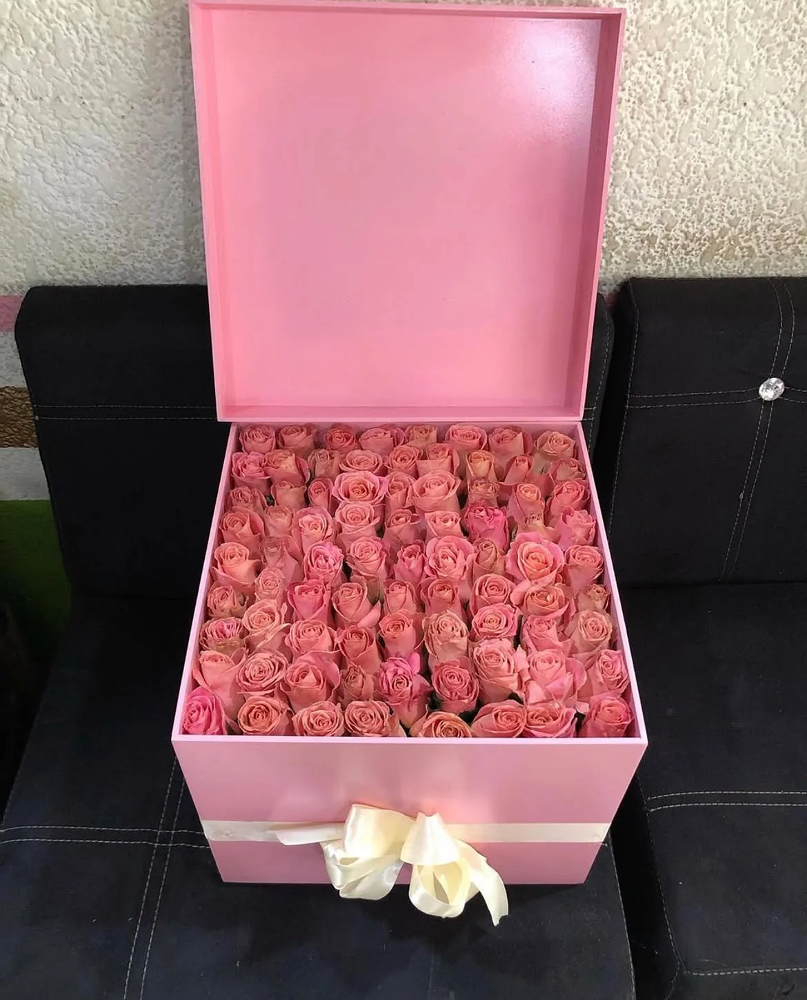
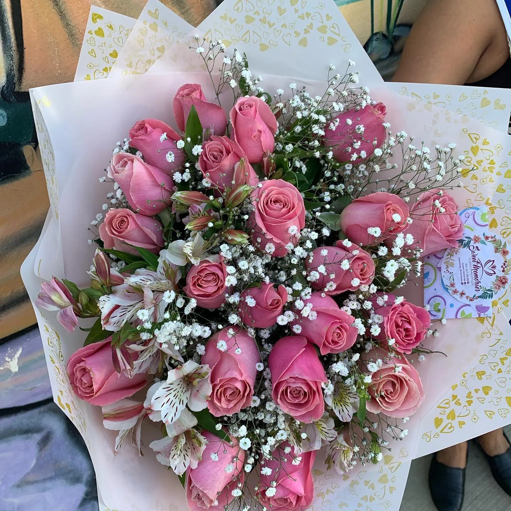

Edición monumental
Bouquet Romance Imperial
Cien rosas rosa pastel en ensamble esférico, coronado con tiara imperial y envuelto en papel sedoso.
Ordenar vía WhatsAppAtelier floral · Oaxaca de Juárez
Diseño floral de autor en Oaxaca. Ramos monumentales, peonías y girasoles elegidos a mano, preparados cada mañana en nuestro atelier de la Colonia Reforma.
Floristería fina · Oaxaca de Juárez
Catálogo selecto
Composiciones que salen del atelier de la Colonia Reforma cada mañana.
Edición monumental
Cien rosas rosa pastel en ensamble esférico, coronado con tiara imperial y envuelto en papel sedoso.
Ordenar vía WhatsApp
Firma del atelier
Peonías holandesas, rosas premium y hortensias en papel aterciopelado con lazo de satén.
Ordenar vía WhatsApp
Pasión clásica
Rosas de tallo largo en rojo carmesí, presentadas en cono bicolor y selladas con moño de satén.
Ordenar vía WhatsApp
Flores de temporada
Girasoles, gerberas y eucalipto aromático de temporada en Oaxaca.
Ordenar vía WhatsApp
Hatbox de lujo
Girasoles premium en caja sombrerera artesanal.
Ordenar vía WhatsApp
Edición delicada
La frondosidad de la peonía con la gracia del lisianthus en tonos suaves.
Ordenar vía WhatsAppCuraduría visual
Fotos reales de arreglos y entregas en Oaxaca. Desliza para recorrerlas.
Guía de la floristería
Nuestros floristas comparten lo que hacen en el atelier para mantener cada arreglo fresco en casa.
Florero limpio con agua fresca. Recorta los tallos en ángulo de 45° cada 2 o 3 días para que los pétalos sigan abriéndose. Evita el sol directo.
Abundante agua limpia. Retira el polen de los estambres para no manchar y recorta el tallo cada pocos días.
Cambia el agua cada 48 horas. Quita el follaje que quede bajo el nivel del agua y aleja el arreglo del aire acondicionado o los ventiladores.

Nuestra historia
Nacimos en Oaxaca para hacer arreglos que se sientan personales. Cada pieza se arma a mano en el atelier de la Colonia Reforma y se entrega fresca, con tarjeta caligráfica.
Hoy nos siguen 10,6 mil personas en Instagram y 22 mil en Facebook, donde mostramos nuestro trabajo. Lo que no cambia es el trato: escribes por WhatsApp y hablas con quien hace el arreglo.
@sweetmemories_floreriaoaxAtelier y entregas
Av. Fuerza Aérea Mexicana 410, Colonia Reforma, 68050 Oaxaca de Juárez, Oax.
Transferencia SPEI · Tarjetas de débito y crédito · Depósitos en OXXO y ventanilla · Confirmación del comprobante por WhatsApp.
Atelier floral · Oaxaca de Juárez
Elige las flores, dinos la ocasión y preparamos el arreglo para entregarlo en Oaxaca.
Pedir por WhatsApp